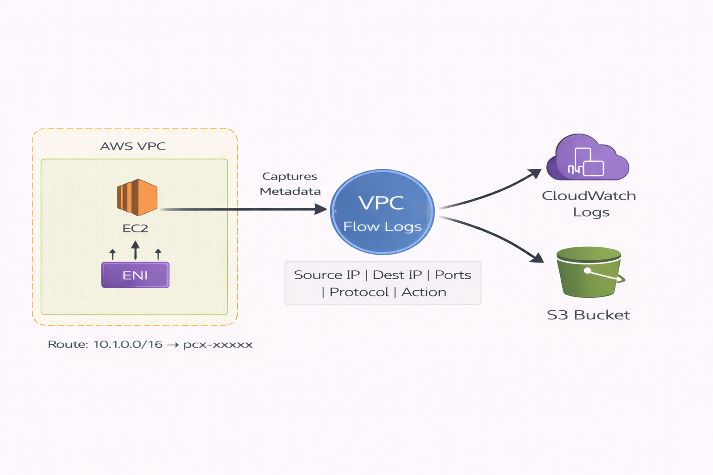

📖 Detailed Explanation
VPC Flow Logs is a feature that captures network traffic metadata flowing to and from network interfaces within your VPC. It provides visibility into network traffic patterns, helping you monitor, troubleshoot, and analyze network connectivity issues.
Flow logs capture information about IP traffic going to and from network interfaces in your VPC. They record allowed and rejected traffic, helping you diagnose overly restrictive security group rules, monitor traffic reaching your instances, and determine the direction of traffic to and from network interfaces.
Unlike packet capture tools, VPC Flow Logs capture metadata about the traffic, not the actual packet contents. This makes them efficient for large-scale monitoring without impacting network performance.
🔑 Key Concepts
- Capture Scope: Flow logs can be created at VPC level (all resources), subnet level (subnet resources), or network interface level (specific resource)
- Traffic Types: Configure to capture accepted traffic, rejected traffic, or all traffic
- Aggregation Interval: Data captured at 1-minute or 10-minute intervals
- Destination Options: Logs stored in CloudWatch Logs, S3 buckets, or Amazon Kinesis Data Firehose
- Log Format: Includes source/destination IP, ports, protocol, packets, bytes, action (ACCEPT/REJECT)
- No Performance Impact: Flow logs run outside the path of network traffic and don't affect network throughput or latency
📊 Flow Log Data Captured
| Field | Description | Use Case |
|---|---|---|
| Source IP Address | IP address of the traffic source | Identify which clients are accessing resources |
| Destination IP Address | IP address of the traffic destination | Determine which resources are being accessed |
| Source Port | Port number used by source | Understand client-side connection details |
| Destination Port | Port number of destination service | Identify which services are being accessed (80=HTTP, 443=HTTPS, 22=SSH) |
| Protocol | IANA protocol number (6=TCP, 17=UDP, 1=ICMP) | Analyze traffic patterns by protocol type |
| Action | ACCEPT or REJECT | Debug security group and NACL rules |
| Packets/Bytes | Number of packets and bytes transferred | Analyze bandwidth usage and traffic volume |
| Account ID | AWS account ID of the network interface owner | Track cross-account traffic |
📊 Visual Architecture

Figure 1: VPC Flow Logs capture network traffic metadata from network interfaces and store in CloudWatch Logs or S3
✅ Best Practices
| Practice | Why It Matters | How to Implement |
|---|---|---|
| Enable at VPC level for comprehensive coverage | Captures all traffic across all resources in VPC | Create flow log with VPC as resource type during VPC creation |
| Use S3 for long-term storage | More cost-effective than CloudWatch for archive purposes | Configure S3 bucket as destination with lifecycle policies |
| Filter for specific traffic types | Reduces storage costs and focuses on relevant data | Capture only rejected traffic for security analysis or only accepted for traffic analysis |
| Set appropriate IAM permissions | Ensures flow logs can write to destination and maintains security | Use AWS-created service role or create custom role with required permissions |
| Use 1-minute intervals for troubleshooting | Provides faster insights during active debugging | Configure aggregation interval to 1 minute when creating flow log |
| Implement log analysis automation | Enables proactive detection of security issues and anomalies | Use CloudWatch Insights, Athena queries on S3, or third-party SIEM tools |
📊 Visual Architecture

Figure 2: VPC Flow Logs Architecture - Traffic captured from EC2 instances through ENIs, stored in CloudWatch Logs and S3